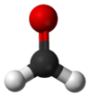

formaldehyde

Definition: Formaldehyde ( (listen) for-MAL-di-hide, US also (listen) fər-) (systematic name methanal) is a naturally occurring organic compound with the formula CH2O and structure H−CHO. The pure compound is a pungent, colourless gas that polymerises spontaneously into paraformaldehyde (refer to section Forms below), hence it is stored as an aqueous solution (formalin), which is also used to store animal specimens. It is the simplest of the aldehydes (R−CHO) and one of the simplest of the carbohydrates. The common name of this substance comes from its similarity and relation to formic acid.
Source: Wikipedia
Wikipedia Page
Wikidata Page